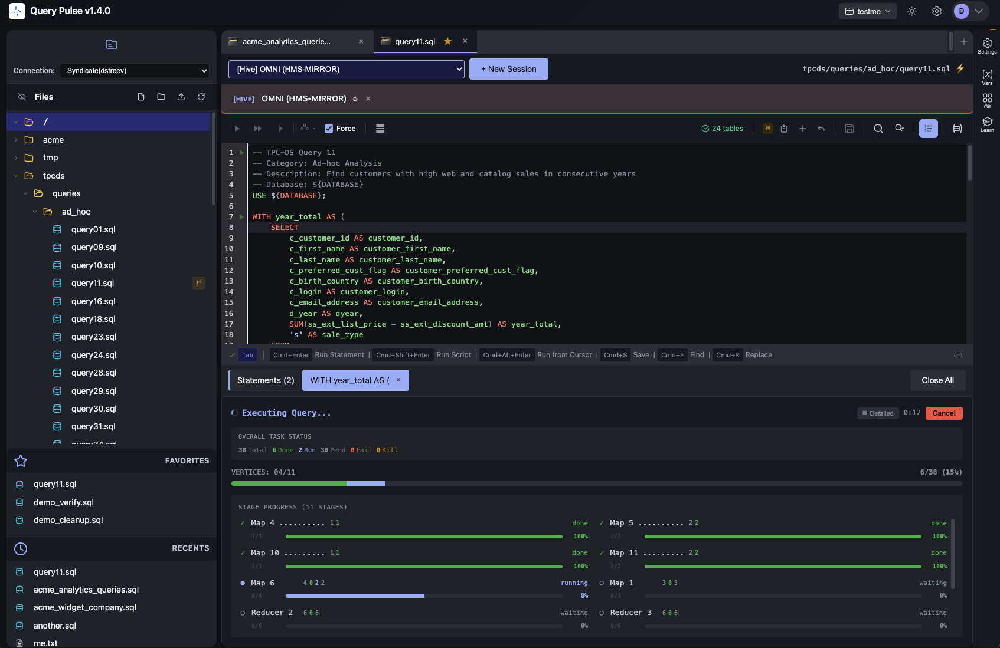
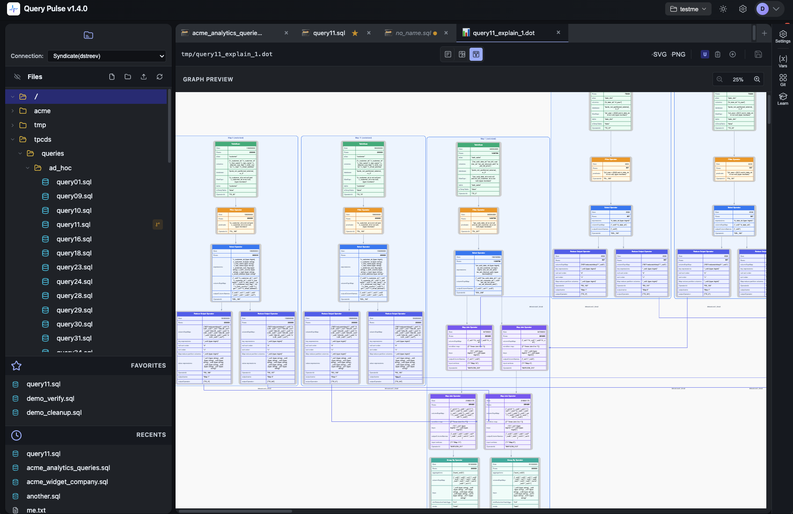
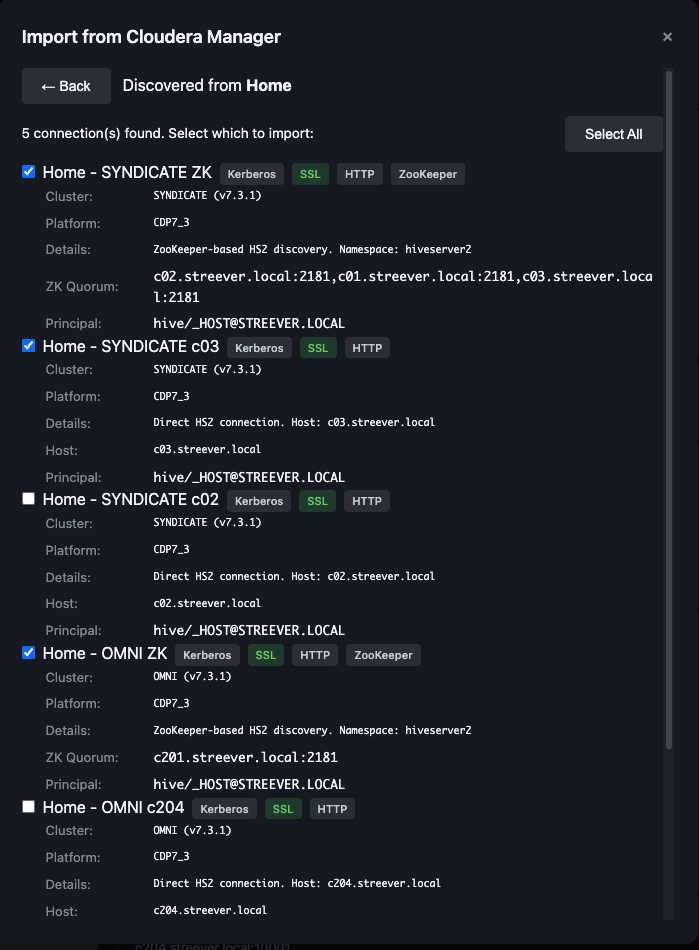
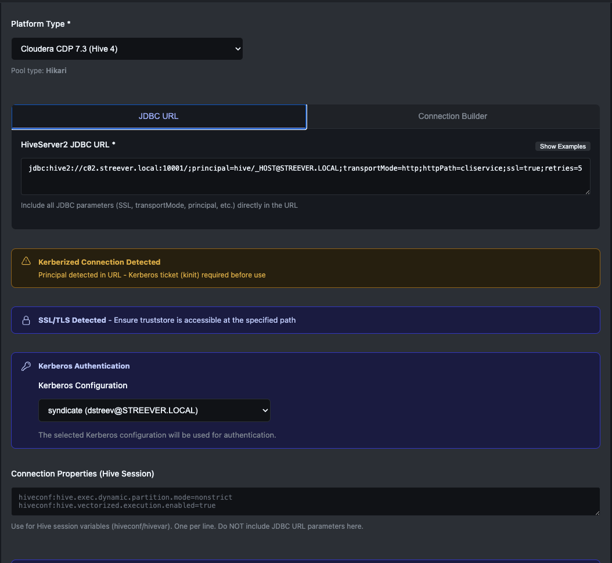

Real-time query progress. Live execution metrics. Five visual explain plans. Git-backed workspaces. Enterprise security. All in one application — no complex setup.

Not just a generic SQL client. Query Pulse is purpose-built for Hive and Trino with engine-specific features you won't find anywhere else.
Everything Beeline shows you — right next to your SQL, not in a separate terminal
The Trino Web UI's stats — built into the editor, right where you write and run your SQL
Most SQL editors show a spinner and "Executing..." while you wait. Query Pulse gives you live, engine-native progress streamed directly from Hive and Trino. Watch your DAG stages complete. See exactly which phase is running. Know how much data is moving and how long each step takes — all without leaving the editor.
Embedded RocksDB storage means zero external dependencies. Your data, credentials, and workspaces are self-contained and portable.
Kerberos, LDAP, OIDC/SSO, TLS/mTLS, and AES-256 credential encryption. Everything you need for production Hadoop environments.
Every workspace is a full Git repository. Branch, commit, push, and collaborate on SQL the same way you manage application code.
Purpose-built for data teams working with Big Data platforms. Every feature solves a real problem.
A multi-tab SQL editor with intelligent code completion, real-time formatting, and multiple execution modes. Run a single statement, execute an entire script, or start from your cursor position.
Every workspace is a full Git repository. Your SQL files, scripts, and configuration are version-controlled from the start. Branch, commit, diff, and push — all without leaving the editor.
Five different explain plan visualizations for Hive give you unprecedented insight into query execution. Visual graph rendering shows operator relationships at a glance.

Connect to Cloudera Manager and automatically discover HiveServer2 endpoints, Kerberos principals, SSL settings, and ZooKeeper HA configurations. No more hand-crafting JDBC URLs.

Built for the authentication and encryption requirements of enterprise Hadoop environments. Manage keytabs, certificates, and credentials without leaving the application.

Drop files from your desktop directly into the workspace file browser.
Built-in T-SQL and Apache Calcite formatters for consistent, readable SQL.
Built-in benchmark suite with 24 tables and 99 standard queries for performance testing.
LLM-powered SQL suggestions with rich schema context via Ollama integration.
Parameterized queries with workspace-level and file-level variable overrides.
Auto, light, and dark themes that follow your system preference or manual selection.
Choose your preferred deployment method. All three get you a fully functional instance with zero configuration.
curl -LO https://github.com/dstreev/LakeHouse-Query-Pulse/releases/latest/download/query-pulse-install-dist.tar.gz
tar xzf query-pulse-install-dist.tar.gz
cd query-pulse./setup.shCreates configuration directory at ~/.query-pulse/ and default settings.
./query-pulse.sh startOpen http://localhost:8088 in your browser.
docker run -d \
--name query-pulse \
-p 8088:8088 \
-v query-pulse-data:/data/query-pulse \
dstreev/query-pulse:latestNavigate to http://localhost:8088.
Data persists in the query-pulse-data Docker volume across restarts.
Deploy Query Pulse as a managed Cloudera Manager service with full lifecycle management, Auto-TLS integration, and centralized configuration. Download the CSD and Parcel, then install through CM.
Defines the service type, configuration parameters, roles, and health checks in Cloudera Manager.
Download CSD JAR QUERY_PULSE-1.4.0.jar • Install to/opt/cloudera/csd/
Contains the application runtime. Distributed and activated across cluster hosts by Cloudera Manager.
/opt/cloudera/parcel-repo/
Copy the CSD JAR to /opt/cloudera/csd/ and the Parcel + SHA to /opt/cloudera/parcel-repo/ on your CM server host.
sudo systemctl restart cloudera-scm-serverRequired for CM to detect the new CSD. Wait ~60 seconds for the server to restart.
In Cloudera Manager, go to Parcels → find QUERY_PULSE → Distribute → Activate.
Go to your cluster → Add Service → select Query Pulse → assign a host → configure settings → Start.
Auto-TLS certificates are automatically detected and configured when enabled on your cluster.
Deploy with confidence. Query Pulse meets the security, compliance, and operational requirements of production Hadoop environments.
Standalone JAR for edge nodes, Docker for containerized environments, or Cloudera Manager with CSD + Parcel for centralized cluster management.
Local accounts, LDAP/Active Directory, or OIDC/SSO. Role-based access control with admin and user roles. JWT-based stateless sessions.
Embedded RocksDB for persistence. No PostgreSQL, no Redis, no message queue. A single JAR file is the entire application.
AES-256-GCM encryption for credentials, keytabs, and sensitive configuration. Secrets never stored in plaintext.
Tested with CDP 7.x, HDP 2/3, CDH 5/6, Apache Hive, Trino, and EMR 6/7. Bring your own JDBC drivers for any platform.
Health check endpoints, RocksDB management console, JVM tuning, and scheduled backups.
Every screenshot is from the real application. What you see is what you get.
Full workspace with SQL editor, results grid, file browser, and Git version control
DOT graph visualization of query execution plans
Real-time query progress with stage-level detail for Hive workloads
Execution details with query metadata, timing, and stage-level summary
One-click endpoint import from Cloudera Manager
Intelligent code completion aware of tables in your query
Connection configuration with Kerberos, SSL, and platform-specific settings
Day theme with Git version control, results grid, and file browser
Download Query Pulse and start running queries in minutes. No credit card. No sign-up. Just a JAR file and your Hadoop cluster.